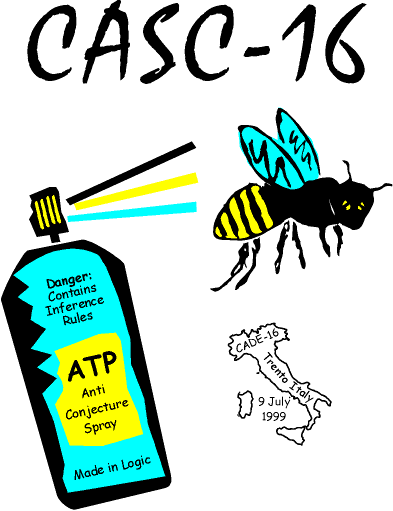

Organization

Now established as an influential annual event in ATP
-
CASC-13 (1996) Rutgers, USA;
CASC-14 (1997) Townsville, Australia;
CASC-15 (1998) Lindau, Germany;
CASC-16 (1999) Trento, Italy;
CASC-17 (2000) Pittsburg, USA;
CASC-JC (2001) Sienna, Italy;
CASC-18 (2002) Copenhagen, Denmark;
CASC-19 (2003) Miami, USA;
CASC-J2 (2004) Cork, Ireland;
CASC-20 (2005) Tallinn, Estonia;
CASC-J3 (2006) Seattle, USA;
CASC-21 (2007) Bremen, Germany;
CASC-J4 (2008) Sydney, Australia;
CASC-22 (2009) Montreal, Canada;
CASC-J5 (2010) Edinburgh, United Kingdom;
CASC-23 (2011) Wroclaw, Poland;
CASC-J6 (2012) Manchester, England;
CASC-24 (2013) Lake Placid, USA;
CASC-J7 (2014) Vienna, Austria;
CASC-25 (2015) Berlin, Germany;
CASC-J8 (2016) Coimbra, Portugal;
CASC-26 (2017) Gothenburg, Sweden;
CASC-J9 (2018) Oxford, United Kingdom;
CASC-27 (2019) Natal, Brazil;
CASC-J10 (2020) Online, Earth;
CASC-28 (2021) Online, Earth;
CASC-J11 (2022) Haifa, Israel;
CASC-29 (2023) Rome, Italy;
CASC-J12 (2024) Nancy, France;
Design and rules online
in advance
- All systems should capture a common notion of "truth" [Pelletier]
- Cheating is not allowed
- Overseen by a panel of knowledgeable researchers
- Trophies, cash and travel prizes
Not Just Evaluation
- Public evaluation
- Stimulation and exposure of implemented theory
- A inspiring environment (dinner, gambling, etc.)
- Great T-shirts